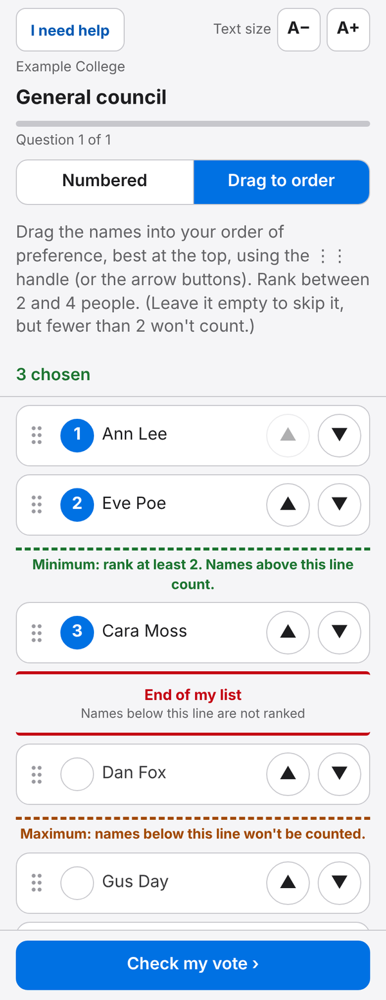
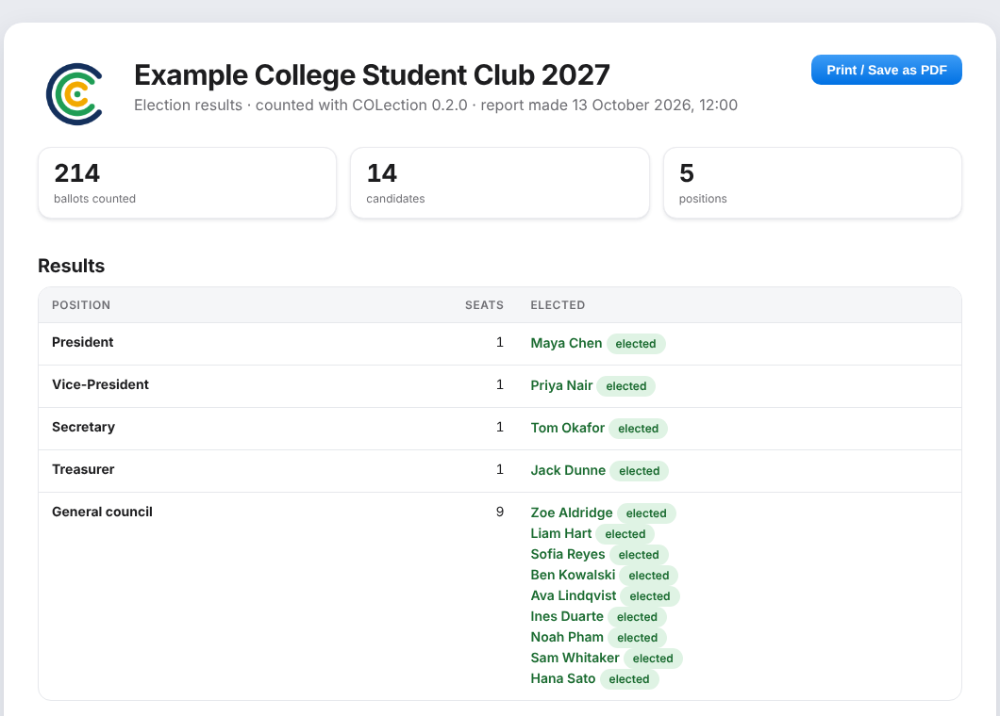
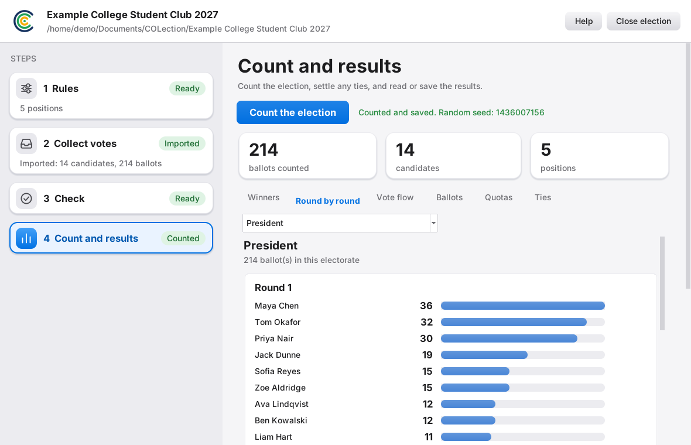
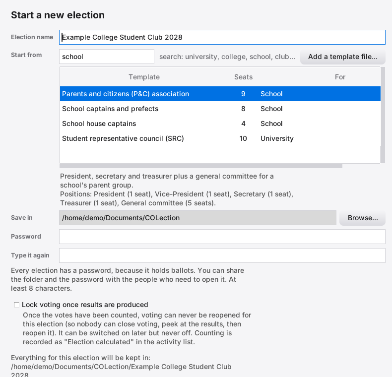

Count college elections, one round at a time.
COLection counts preferential and multi-seat elections, runs the vote on phones and voting stations, and keeps a record so anyone can check how the result came about.
Download COLection See how an election runs
Runs on your own computer. Needs no internet while people vote.
President
200 ballots, five candidates
Needs more than half of the votes still counting
Four steps, in the same order every time
Each election lives in its own folder with its own password. The steps down the left of the program take you from the rules to the result, and each one tells you when it is ready.
-
Rules
Say who is being elected and how: single roles, committees, groups with limits, tie rules. Start from a template or build your own.
-
Collect votes
Import answers from Google Forms, or run the vote in person on phones and voting stations.
-
Check
Before anything is counted, the program checks that the rules and the people standing fit together, and tells you plainly if they do not.
-
Count and results
Count, settle any ties, then read, print or sign off the results.

Vote in the room, on the voters' own phones or on a station
One computer is the host. Voters join from a QR code on their phone, or sit at a voting station that goes full screen and locks until a password is entered. A person at the desk checks who is who and sends each voter to a free station.
- Two ways to rank
- Voters can number their choices, or drag names into order. Lines show the fewest and most preferences that count, and a red line marks where their list ends.
- Names stay off ballots
- A ballot carries no name and no time, and new ballots are placed at a random position, so nobody can work out whose is whose.
- Help without a queue
- A voter can tap I need help, and the desk sees which station asked.
- If the host fails
- Stations keep finished ballots, and a second computer can take over from a backup folder so no vote is lost.


Rules colleges actually use
Elections are rarely just "most votes wins". These are the things the program is built to count correctly.
- One seat
- Each ballot counts for its highest choice still in the count. The candidate with the fewest votes is excluded and their ballots move on, until someone has a majority.
- Many seats
- Committees are counted with a quota. Votes beyond the quota are passed on at a reduced value, and the Ballots tab shows what each ballot was worth in every round.
- Groups and limits
- Cap or reserve places by any group you define, such as gender, year level or international students. The results show which candidates a limit affected.
- Ties
- Decide in advance: ask the returning officer, draw at random, exclude all together or look back at earlier rounds. Every tie and how it was settled is recorded.
- Minimum turnout
- If your rules need a minimum share of the roll to vote, the program tracks it and the report says whether it was met.
- Roles tied to groups
- A position can be open to only some candidates or only some voters, for example a representative chosen by one house.

Results that can be checked, not just trusted
- Round by round. Every tally, every exclusion, and a flow diagram of where votes went.
- Ballot by ballot. Scrutineers can look at any ballot and see where it was counted in each round.
- Count it again. One button counts again from the saved record and confirms the winners are identical.
- Sign off. People sign against a results code. If the election is counted again and anything changes, earlier sign-offs stop applying.
- One printable report. Choose what goes in it, then print it or save it as a PDF.

Start from a template, keep your own
The library has ready-made setups for university unions, residential colleges, schools, clubs, community groups, awards nights and yes or no motions. Type a few words to find one, such as "uni", "school" or "club".
Built an election you will run again next year? Save its rules as your own template, and send the file to another college so they can use it too. Only the rules are saved, never candidates, voters or votes.
Templates are starting points. Check them against your own constitution before you rely on them.

What to know before you use it
- It is meant for in-person votes, with people watching, on a network you trust. Messages between the host and voting stations are encrypted. The phone page is served over the local network without HTTPS, so do not use it on a network you do not trust.
- It counts the rules you give it. It does not replace your constitution or your returning officer, so check the Rules step against both.
- Passwords protect each election folder. Keep the recovery key somewhere safe: without the password or the key, nobody can open it.
- The host computer has to stay on and the program open while people vote.
Download COLection
Version 0.2.0 for Windows. It is a zip file: unzip it, and follow the three steps beside this.
If the program is not signed, Windows may show a warning the first time. That is expected for new software.
- Install Python 3.12 or newer From python.org. On the first screen of the installer, tick "Add python.exe to PATH".
- Unzip the folder Anywhere you like, for example your Documents folder.
-
Start it
Open the folder, type
cmdin the address bar, press Enter, then runpy main.py.
Questions
Does it need the internet?
Not to vote or count. Phones and voting stations talk to the host over your local network, such as the college Wi-Fi. You only need the internet to download it, or if you import answers from Google Forms.
Can I use Google Forms instead of voting in the program?
Yes. Step 2 can import the answers from a Google Forms file, merge spellings of the same name, and leave out duplicate votes. You then check and count as usual.
Can I change the rules for my own college?
Yes. The Rules step lets you add positions, groups, limits, tie rules and a minimum turnout, and each change is checked straight away so the rules cannot contradict each other.
What happens if a station freezes or a voter walks away?
The desk can take the ballot back and send the voter again. Finished ballots stay safe on the station until a host can take them.
Does it work on a Mac?
The program is written in Python and may run, but it has been built and used on Windows. Treat other systems as untested.